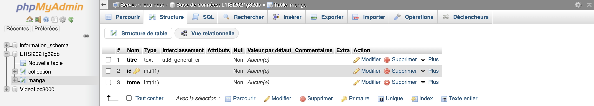
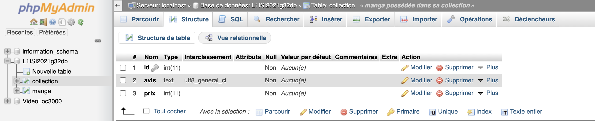

les difficultées rencontrées
- difficulté lié dans un premier temps à l'utilisation du framework
koder sur ipad qui m'empèchait certaine fonction basique.
- migration du projet de koder vers vs code.
- mise en place du lien avec l'extension sftp qui rentrait en conflit
avec le travaille éfectuer précédement.
- création d'une feuille de style qui me correspondait.
- comprendre l'interface php my admin et surtout comment lier
plusieurs table par le biais de clé étrangère.
Les limites de mon programme
- sécurité à revoir à cause de l'insertion sql
- bug de design css en fonction des format ("superposition de box")
- base de donnée personnelle assez pauvre
idées apportée
- menu pour naviguer entre les différentes pages
- le design du css

